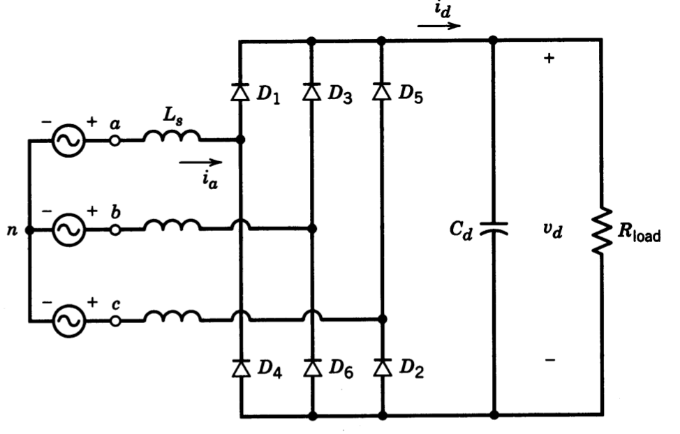
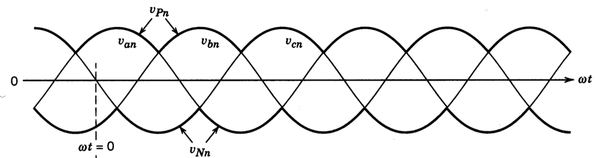
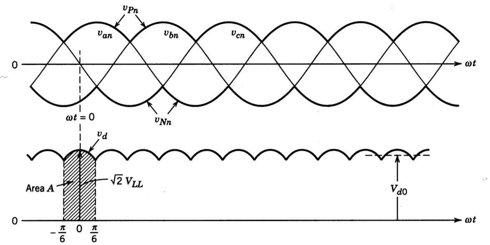

class: center, middle # EE-464 STATIC POWER CONVERSION-II # Review of the Previous Semester ## Ozan Keysan ## [keysan.me](http://keysan.me) ### Office: C-113 <span class="meta">•</span> Tel: 210 7586 --- ## What we did last semester? -- - ## Line Commutated Rectifiers -- - ### Diode Rectifiers -- - ### Thyristor Rectifiers -- - ## DC/DC Converters -- - ### Buck Converter -- - ### Boost Converter -- - ### Buck/Boost Converter --- # Fundamental Definitions -- - ## RMS (Root Mean Square) -- - ## Distortion Factor -- - ## Displacement Power Factor -- - ## (True) Power Factor -- - ## THD (Total Harmonic Distortion) --- # Line Frequency Diode Rectifiers -- <img src="./images/ee463/rectifier_block.png" alt="Drawing" style="width: 800px;"/> --- ## 3-Phase Half Wave Rectifier ### N-Phase Generalized Form <img src="./images/ee463/n_phase_half_bridge.png" alt="Drawing" style="width: 600px;"/> --- ## 3-Phase Half Wave Rectifier ## Voltage Waveforms <img src="./images/ee463/3ph_half_bridge_voltage.png" alt="Drawing" style="width: 600px;"/> --- ## 3-Phase Half Wave Rectifier ## Average Voltage? -- ## \\(V\_{dc}= \dfrac{3\sqrt{6}}{2 \pi} V\_{rms}\\) --- ## 3-Phase Full Wave (Bridge) Rectifier --  --- ## 3-Phase Full Wave (Bridge) Rectifier ### Can you draw the voltage and current waveforms? --  --- ## 3-Phase Full Wave (Bridge) Rectifier ### Can you draw the voltage and current waveforms?  --- ## 3-Phase Full Wave (Bridge) Rectifier ## Average voltage? -- ## \\(V\_{dc}= \dfrac{3\sqrt{6}}{ \pi} V\_{ph}\\) ### or -- ## \\(V\_{dc}= \dfrac{3\sqrt{2}}{ \pi} V\_{l-l} = 1.35 V\_{l-l}\\) ### =540 Vdc for a 400 V grid --- # Half-bridge Tyristor Rectifier -- <img src="http://lh3.ggpht.com/-kPBowC5Q8oE/Tf_VIqQNDLI/AAAAAAAABdE/8o6SQlRpiCc/10_thumb2.jpg?imgmax=800" alt="Drawing" style="width: 600px;"/> --- # Half-bridge Tyristor Rectifier ## Average Voltage? ## \\(V\_{dc(\alpha)}= \dfrac{3\sqrt{6}}{2 \pi} V\_{ph,rms} cos (\alpha)\\) --- # Full-bridge Tyristor Rectifier -- <img src="./images/ee463/3ph_thyristor.png" alt="Drawing" style="width: 600px;"/> --- # Output Voltage vs. Firing Angle -- <img src="./images/ee462/3phase_thyristor_0.png" alt="Drawing" style="width: 800px;"/> --- # Output Voltage vs. Firing Angle <img src="./images/ee462/3phase_thyristor_30.png" alt="Drawing" style="width: 800px;"/> --- # Output Voltage vs. Firing Angle <img src="./images/ee462/3phase_thyristor_60.png" alt="Drawing" style="width: 800px;"/> --- # Output Voltage vs. Firing Angle <img src="./images/ee462/3phase_thyristor_90.png" alt="Drawing" style="width: 800px;"/> --- # Output Voltage vs. Firing Angle <img src="./images/ee462/3phase_thyristor_120.png" alt="Drawing" style="width: 800px;"/> --- # Output Voltage vs. Firing Angle <img src="./images/ee462/3phase_thyristor_150.png" alt="Drawing" style="width: 800px;"/> --- # Output Voltage vs. Firing Angle <img src="./images/ee462/3phase_thyristor_180.png" alt="Drawing" style="width: 800px;"/> s --- # DC/DC Converters - ## Buck Converter - ## Boost Converter - ## Buck-Boost Converter --- # Step-Down (Buck) Converter: ### Can you plot the schematic? -- <img src="./images/ee463/step_down_low_pass.png" alt="Drawing" style="width: 700px;"/> ### [Buck Converter Simulation](https://www.plexim.com/academy/power-electronics/buck-conv) --- ## Step-Down (Buck) Converter: ### Operating Modes (CCM) <img src="./images/ee463/buck_converter_voltages.png" alt="Drawing" style="width: 600px;"/> CCM: Continuous Conduction Mode --- # Step-Down (Buck) Converter: -- #\\(V_o = D V_d\\) -- ### Neglecting losses #\\(I_o = I_d/D\\) --- # Voltage Ripple -- ### \\( \dfrac{\Delta V\_o}{V\_0}= \dfrac{(1-D) T\_s^2 }{8LC} \\) -- ### \\( \dfrac{\Delta V\_o}{V\_0}= \dfrac{\pi^2 (1-D) }{2} {\bigg(\dfrac{f\_c}{f\_s}\bigg)}^2 \\) --- # Step-Up (Boost) Converter -- <img src="./images/ee463/boost_converter.png" alt="Drawing" style="width: 700px;"/> --- # Step-Up (Boost) Converter -- <img src="./images/ee463/boost_on_off_voltage.png" alt="Drawing" style="width: 650px;"/> --- # Step-Up (Boost) Converter -- ## \\(V\_d t\_{on} + (V\_d-V\_o)t\_{off}=0\\) -- ## \\( \dfrac{V\_o}{V\_d} = \dfrac{T\_s}{t\_{off}} = \dfrac{1}{1-D} \\) -- ## \\( \dfrac{I\_o}{I\_d} = (1-D) \\) --- # Buck-Boost Converter -- <img src="./images/ee463/buck_boost.png" alt="Drawing" style="width: 550px;"/> ## [Plexim Simulation](https://www.plexim.com/academy/power-electronics/buckboost-conv) --- # Buck-Boost Converter ## Operating Modes -- ### Switch is ON (Inductor Charges) <img src="https://www.allaboutcircuits.com/uploads/articles/4B-Converter-in-Equilibrium-2_(4).png" alt="Drawing" style="width: 750px;"/> --- # Buck-Boost Converter ## Operating Modes -- ### Switch is OFF (Inductor Discharges) <img src="https://www.allaboutcircuits.com/uploads/articles/4B-Converter-in-Equilibrium-2_(5).png" alt="Drawing" style="width: 750px;"/> --- # Buck-Boost Converter ## Output Voltage -- #\\(V_o = \dfrac{D}{(1-D)} V_d\\) ### Notice the reverse polarity of Vo in the circuit --- <img src="http://legendsrevealed.com/entertainment/wp-content/uploads/2015/10/future-continued.jpg" alt="Drawing" style="width: 350px;"/> ## EE464 - ## Ćuk Converter - ## SEPIC Converter - ## Flyback Converter - ## Resonant Converters --- ## You can download this presentation from: [keysan.me/ee464](http://keysan.me/ee464)